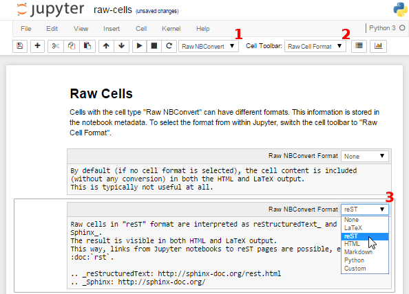

Raw Cells¶
The “Raw NBConvert” cell type can be used to render different code formats into HTML or LaTeX by Sphinx. This information is stored in the notebook metadata and converted appropriately. To select a desired format from within Jupyter, select the cell containing your special code and choose options from the following dropdown menus:
- Select “Raw NBConvert”
- Switch the Cell Toolbar to “Raw Cell Format”
- Chose the appropriate “Raw NBConvert Format” within the cell

The following examples are different Jupyter cell formats that are rendered by Sphinx.
None¶
By default (if no cell format is selected), the cell content is included (without any conversion) in both the HTML and LaTeX output. This is typically not useful at all.
"I'm a raw cell with no format."reST¶
Raw cells in “reST” format are interpreted as reStructuredText and parsed by Sphinx. The result is visible in both HTML and LaTeX output.
“I’m a raw cell in reST format.”
Markdown¶
Raw cells in “Markdown” format are interpreted as Markdown, and the result is included in both HTML and LaTeX output. Since the Jupyter Notebook also supports normal Markdown cells, this might not be useful at all.
“I’m a raw cell in Markdown format.”
HTML¶
Raw cells in “HTML” format are only visible in HTML output. This option might not be very useful, since raw HTML code is also allowed within normal Markdown cells.
“I’m a raw cell in HTML format.”
LaTeX¶
Raw cells in “LaTeX” format are only visible in LaTeX output.
Python¶
Raw cells in “Python” format are not visible at all (nor executed in any way).